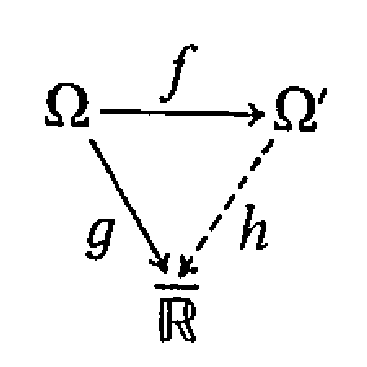

Capítulo 3 Funções Mensuráveis
As funções mensuráveis (ou também transformações mensuráveis) desempenham nesta teoria, de modo geral, um papel semelhante ao das funções contínuas em Topologia. Esta afirmação naturalmente tem tanta imprecisão como generalidade. O estudo desta classe de funções está associado ao desenvolvimento de uma integral mais geral que a Integral de Riemann, no sentido de que permitisse “integrar” uma classe maior de funções. No Cap. 4 essa integral vai ser introduzida. Vamos ver, por exemplo, que para toda função mensurável não-negativa é possível definir sua integral. Como as funções integráveis, no sentido de Riemann, resultaram mensuráveis, esse resultado implicará que a classe das funções para as quais a noção de integral é definida, será maior que a classe das integráveis Riemann. Não será difícil provar que essa classe de funções é estritamente maior que a anterior e que a nova integral coincide com a de Riemann sobre as funções integráveis Riemann. Essas considerações justificam plenamente o estudo dessa importante classe de funções.
Todos os resultados deste capítulo, com exceção da Prop. 3.22, são constantemente usados nos capítulos seguintes. Os Exercs. 16 e 23 devem ser também estudados cuidadosamente.
Neste e nos seguintes caps, todo \(\sigma\)-anel que aparecer será uma \(\sigma\)-álgebra. Se \(\mathscr{C} \subseteq \mathbb{P}(\Omega)\), \(\sigma(\mathscr{C})\) indicará a \(\sigma\)-álgebra gerada por \(\mathscr{C}\).
DEFINIÇÃO 3.1. Sejam \((\Omega, \mathscr{A})\) e \((\Omega', \mathscr{A}')\) espaços mensuráveis. \(f: \Omega \to \Omega'\) é dita mensurável, se para todo \(A' \in \mathscr{A}'\), \(f^{-1}(A') \in \mathscr{A}\). (Também diremos que \(f\) é \(\mathscr{A}\)-\(\mathscr{A}'\) mensurável).
Notação. Se \(f: \Omega \to \Omega'\) e \(\mathscr{C}\) é uma classe de subconjuntos de \(\Omega'\), por definição \(f^{-1}(\mathscr{C}) = \{f^{-1}(C): C \in \mathscr{C}\}\). Nesta notação, \(f\) é mensurável se \(f^{-1}(\mathscr{A}') \subseteq \mathscr{A}\).
PROPOSIÇÃO 3.1. Se \(f: \Omega \to \Omega'\) e \(\mathscr{C}\) é uma \(\sigma\)-álgebra em \(\Omega'\), então \(f^{-1}(\mathscr{C})\) é uma \(\sigma\)-álgebra em \(\Omega\).
Demonstração. Veja o Exerc. 1.
PROPOSIÇÃO 3.2. Se \(f: \Omega \to \Omega'\) e \(\mathscr{C}\) é uma classe de subconjuntos de \(\Omega'\) então \(f^{-1}(\sigma(\mathscr{C})) = \sigma(f^{-1}(\mathscr{C}))\).
Demonstração. Como \(f^{-1}(\sigma(\mathscr{C}))\) contém \(f^{-1}(\mathscr{C})\) e, pela proposição anterior, é uma \(\sigma\)-álgebra temos \[f^{-1}(\sigma(\mathscr{C})) \supseteq \sigma(f^{-1}(\mathscr{C})).\] Para mostrar a outra inclusão, é suficiente mostrar que, se \[\mathscr{D} = \{A \subseteq \Omega': f^{-1}(A) \in \sigma(f^{-1}(\mathscr{C}))\},\] então \(\sigma(\mathscr{C}) \subseteq \mathscr{D}\). Mas isto decorre de \(\mathscr{D}\) ser uma \(\sigma\)-álgebra que contém \(\mathscr{C}\), o que é fácil verificar.
PROPOSIÇÃO 3.3. Sejam \((\Omega, \mathscr{A})\) e \((\Omega', \mathscr{A}')\) espaços mensuráveis, \(f: \Omega \to \Omega'\) e \(\mathscr{C}\) uma classe de subconjuntos de \(\Omega'\), tal que \(\sigma(\mathscr{C}) = \mathscr{A}'\). Nestas condições, se \(f^{-1}(\mathscr{C}) \subseteq \mathscr{A}\) então \(f\) é mensurável.
Demonstração. \(f^{-1}(\mathscr{A}') = f^{-1}(\sigma(\mathscr{C})) = \sigma(f^{-1}(\mathscr{C})) \subseteq \mathscr{A}\), sendo que a última inclusão decorre do fato de \(\mathscr{A}\) ser uma \(\sigma\)-álgebra que contém \(f^{-1}(\mathscr{C})\).
DEFINIÇÃO 3.2. Sejam \(\Omega\) um conjunto, \(((\Omega_i, \mathscr{A}_i))_{i \in I}\) uma família de espaços mensuráveis e \(f_i: \Omega \to \Omega_i, i \in I\). A menor \(\sigma\)-álgebra em \(\Omega\) que torna todas as \(f_i\) mensuráveis é chamada \(\sigma\)-álgebra inicial. Em símbolos: a \(\sigma\)-álgebra inicial é a \(\sigma(\bigcup\limits_{i \in I} f_i^{-1}(\mathscr{A}_i))\). Esta \(\sigma\)-álgebra é denotada com \(\sigma(\{f_i: i \in I\})\).
PROPOSIÇÃO 3.4. Nas condições da definição acima, se, para cada \(i \in I, \mathscr{C}_i\) é uma classe de subconjuntos de \(\Omega_i\), tal que \(\sigma(\mathscr{C}_i) = \mathscr{A}_i\), então a \(\sigma\)-álgebra inicial coincide com a \(\sigma\)-álgebra gerada pela família: \[\mathscr{D} = \left\{\bigcap\limits_{j=1}^{n} f_{i_j}^{-1}(C_{i_j}): C_{i_j} \in \mathscr{C}_{i_j}, i_j \in I, j = 1, 2, \ldots, n, n = 1, 2, \ldots\right\}.\]
Demonstração. Seja \(\mathscr{F}\) a \(\sigma\)-álgebra inicial. Como \(\mathscr{F}\) torna as \(f_j\) mensuráveis, \(f_i^{-1}(C_i) \in \mathscr{F}\) para todo \(C_i \in \mathscr{C}_i\) e para todo \(i \in I\). Além disso, como \(\mathscr{F}\) é fechada por interseções finitas (\(\mathscr{F}\) é \(\sigma\)-álgebra), \(\mathscr{D} \subseteq \mathscr{F}\), e então \(\sigma(\mathscr{D}) \subseteq \mathscr{F}\). Por outro lado, \[f_i^{-1}(\mathscr{A}_i) = f_i^{-1}(\sigma(\mathscr{C}_i)) = \sigma(f_i^{-1}(\mathscr{C}_i)) \subseteq \sigma(\mathscr{D}),\] o que implica que \(f_i\) é \(\sigma(\mathscr{D})\)-mensurável, para todo \(i \in I\). Então \(\mathscr{F} \subseteq \sigma(\mathscr{D})\).
DEFINIÇÃO 3.3. Se nas condições da Definição 3.2, \(\Omega = \prod\limits_{i \in I} \Omega_i\) e as \(f_i\) são as projeções naturais de \(\Omega\) sobre \(\Omega_i\), a \(\sigma\)-álgebra inicial é dita \(\sigma\)-álgebra produto.
Notação. Se \(\mathscr{A}\) é a \(\sigma\)-álgebra produto, \(\mathscr{A}\) é denotada por \(\prod\limits_{i \in I} \mathscr{A}_i\).
PROPOSIÇÃO 3.5. Se \((\Omega, \mathscr{A})\), \((\Omega', \mathscr{A}')\), \((\Omega'', \mathscr{A}'')\) são espaços mensuráveis e \(f: \Omega \to \Omega'\) e \(g: \Omega' \to \Omega''\) são funções mensuráveis, então \(g \circ f: \Omega \to \Omega''\) é mensurável.
Demonstração. Veja Exerc. 2.
PROPOSIÇÃO 3.6. Sejam \((\Omega_i, \mathscr{A}_i)_{i \in I}\) uma família de espaços mensuráveis, \(\Omega\) um conjunto e \(f_i: \Omega \to \Omega_i, \forall i \in I\). Seja \(\mathscr{A}\) a \(\sigma\)-álgebra inicial correspondente sobre \(\Omega\). Sejam ainda \((\Omega', \mathscr{A}')\) um espaço mensurável e \(f: \Omega' \to \Omega\). Então \(f\) é mensurável se, e somente se, \(f_i \circ f\) é mensurável, \(\forall i \in I\).
Demonstração. Suponhamos que \(f_i \circ f\) é mensurável, \(\forall i \in I\). Pelas Props. 3.3 e 3.4 é suficiente mostrar que \(\forall n, \forall i_1, i_2, \ldots, i_n \in I \forall A_{i_j} \in \mathscr{A}_{i_j}\), então \[f^{-1}\left(\bigcap\limits_{j=1}^{n} f_{i_j}^{-1}(A_{i_j})\right) \in \mathscr{A}'.\] Isto decorre da identidade \[f^{-1}\left(\bigcap\limits_{j=1}^{n} f_{i_j}^{-1}(A_{i_j})\right) = \bigcap\limits_{j=1}^{n} (f_{i_j} \circ f)^{-1}(A_{i_j}).\] A outra implicação decorre imediatamente da Prop. anterior.
COROLÁRIO 3.1. Se na proposição anterior \(\Omega = \prod\limits_{i \in I} \Omega_i\), as \(f_i\) são as projeções naturais de \(\Omega\) sobre \(\Omega_i\), e \(\mathscr{A}\) é a \(\sigma\)-álgebra produto, então \(f\) é mensurável se, e somente se, \(\pi_i \circ f\) é mensurável, \(\forall i \in I\).
PROPOSIÇÃO 3.7. Seja \((\Omega, \mathscr{A})\) um espaço mensurável e \(f: \Omega \to \Omega'\). Então \(\{B: B \subseteq \Omega', f^{-1}(B) \in \mathscr{A}\}\) é a maior \(\sigma\)-álgebra em \(\Omega'\) que torna \(f\) mensurável.
Demonstração. Veja Exerc. 3.
PROPOSIÇÃO 3.8. Seja \((\Omega_i, \mathscr{A}_i)_{i \in I}\) uma família de espaços mensuráveis, \(\Omega\) um conjunto e \(f_i: \Omega_i \to \Omega, i \in I\). Então \[\mathscr{A} = \bigcap\limits_{i \in I} \{B: B \subseteq \Omega, f_i^{-1}(B) \in \mathscr{A}_i\}\] é a maior \(\sigma\)-álgebra em \(\Omega\) que torna todas as \(f_i\) mensuráveis. Esta \(\sigma\)-álgebra é chamada \(\sigma\)-álgebra final.
Demonstração. Veja o Exerc. 4.
Vamos agora estudar com mais detalhes as funções numéricas.
Notação. Usaremos os símbolos \(\mathbb{R}\) ou \(\mathscr{B}\) para indicar a \(\sigma\)-álgebra de Borel em \(\mathbb{R}^1\). Usaremos os símbolos \(\overline{\mathbb{R}}\) para denotar o conjunto \(\mathbb{R}^1 \cup \{+\infty\} \cup \{-\infty\}\), e \(\overline{\mathscr{R}}\) para denotar a \(\sigma\)-álgebra gerada por \(\mathscr{B} + \{+\infty\} + \{-\infty\}\).
Seja \((\Omega, \mathscr{A})\) um espaço mensurável.
DEFINIÇÃO 3.4. \(f: \Omega \to \overline{\mathbb{R}}\) é dita mensurável se, e somente se, \(f^{-1}(\overline{\mathscr{R}}) \subseteq \mathscr{A}\).
PROPOSIÇÃO 3.9. Seja \(f: \Omega \to \mathbb{R}\) e \(\mathscr{D}\) um conjunto denso em \(\mathbb{R}^1\). Se para todo \(z \in \mathscr{D}\), \([f < z] \in \mathscr{A}\), então \(f\) é mensurável.
Nota. Lembrar que \([f < z] = f^{-1}([-\infty, z])\). O mesmo resultado é válido se trocarmos \([f < z]\) por \([f \leq z]\) porque estas duas famílias geram a \(\sigma\)-álgebra de Borel.
Demonstração. Seja \(D' \subseteq \mathscr{D}\) um conjunto enumerável denso em \(\mathbb{R}^1\). Às identidades \[f^{-1}(\{-\infty\}) = \bigcap\limits_{z \in D'} [f < z],\] \[f^{-1}(\{+\infty\}) = \bigcap\limits_{z \in D'} [f \geq z],\] e \([f < z] = \bigcup\limits_{n=1}^{\infty} [f < z_n]\) para todo \(z \in \mathbb{R}^1\), sendo \(z_n \uparrow z, z_n \in D'\) mostram que a imagem inversa de um sistema de geradores de \(\overline{\mathbb{R}}\) está contido em \(\mathscr{A}\), e portanto \(f^{-1}(\overline{\mathscr{R}}) \subseteq \mathscr{A}\).
PROPOSIÇÃO 3.10. Seja \((X, \tau)\) um espaço topológico e seja \(\mathscr{B} = \sigma(\tau)\) a \(\sigma\)-álgebra de Borel correspondente. Toda aplicação \(f: X \to \mathbb{R}^1\) semicontínua superiormente (ou semicontínua inferiormente) é \(\mathscr{B}\)-\(\mathbb{R}\)-mensurável. Em particular, toda aplicação contínua é mensurável.
Demonstração. Se \(f\) é semicontínua superiormente, \([f < z]\) é aberto, ou seja pertencente a \(\tau\) e portanto pertencente a \(\mathscr{B} = \sigma(\tau)\), para todo \(z \in \mathbb{R}^1\). No caso de \(f\) ser semicontínua inferiormente o mesmo ocorre para os conjuntos do tipo \([f > z]\).
PROPOSIÇÃO 3.11. Se \(\mathscr{R}^n\) indica a \(\sigma\)-álgebra de Borel em \(\mathbb{R}^n\), então \[\mathscr{R}^n = \underbrace{\mathscr{R} \times \ldots \times \mathscr{R}}_{n \text{ vezes}}.\]
Demonstração. Demonstração Se \(\varepsilon\) indica a família dos intervalos abertos em \(\mathbb{R}^1\), e \(\varepsilon^n\) a família de produtos destes intervalos em \(\mathbb{R}^n\), temos que \(\sigma(\varepsilon^n) = \mathscr{R} \times \ldots \times \mathscr{R}\); (porque \(\sigma(\varepsilon) = \mathscr{R}\), e \(\mathscr{R} \times \ldots \times \mathscr{R}\) é \(\sigma\)-álgebra produto). Como os elementos de \(\varepsilon^n\) são abertos, temos \(\varepsilon^n\) \(\subseteq \mathscr{R}^n\) e portanto \(\mathscr{R} \times \ldots \times \mathscr{R} \subseteq \mathscr{R}^n\). Reciprocamente, como todo aberto de \(\mathbb{R}^n\) pode ser escrito em uma união enumerável de elementos de \(\varepsilon^n\), temos que todo aberto é pertencente a \(\mathscr{R} \times \ldots \times \mathscr{R}\), e portanto \(\mathscr{R}^n \subseteq \mathscr{R} \times \ldots \times \mathscr{R}\).
COROLÁRIO 3.2. \((\Omega, \mathscr{A})\) espaço mensurável e \(f_1, f_2, \ldots, f_n\) funções a valores em \(\mathbb{R}^1\). Então elas são mensuráveis se, e somente se, a função \(\omega \to (f_1(\omega), f_2(\omega), \ldots, f_n(\omega))\) é \(\mathscr{A}\)-\(\mathbb{R}^n\)-mensurável.
PROPOSIÇÃO 3.12. \((\Omega, \mathscr{A})\) espaço mensurável, \(f\) e \(g\) duas funções mensuráveis com valores em \(\mathbb{R}^1\), \(c\) número real. Então as funções \[cf, f^2, |f|, f^+, f^-, f+g \text{,\quad e } \quad fg\] são mensuráveis.
Demonstração. As primeiras cinco funções são composição de \(f\) com uma função contínua. Para provar que \(f+g\) é mensurável, procedemos da seguinte forma: a função \((x, y) \in \mathbb{R}^1 \times \mathbb{R}^1 \to x+y \in \mathbb{R}^1\) é contínua e portanto, \(\mathbb{R}^2\) mensurável. Como \(\mathbb{R}^2 = \mathbb{R} \times \mathbb{R}\), é \(\mathbb{R} \times \mathbb{R}\) mensurável. A função \(\omega \in \Omega \to (f(\omega), g(\omega)) \in \mathbb{R}^2\) e \(\mathscr{A}\)-\(\mathbb{R} \times \mathbb{R}\) mensurável. Como \(f+g\) é a composição destas duas funções, ela é também mensurável. O mesmo argumento, usando agora a função \[(x, y) \in \mathbb{R}^1 \times \mathbb{R}^1 \to xy \in \mathbb{R}^1,\] prova que \(fg\) é mensurável.
PROPOSIÇÃO 3.13. \((\Omega, \mathscr{A})\) espaço mensurável. Então \(f: \Omega \to \overline{\mathbb{R}}\) é mensurável se, e somente se: \([f = +\infty] \in \mathscr{A}\) e \([f = -\infty] \in \mathscr{A}\) e \[\tilde{f} = \begin{cases} f & \text{se } |f| < \infty \\ 0 & \text{se } |f| = \infty \end{cases}\] é mensurável.
Demonstração. Veja o Exerc. 7.
Usaremos as seguintes convenções para operar com os símbolos \(+\infty\) e \(-\infty\) e os elementos \(x \in \mathbb{R}^1\): \[(\pm\infty) + (\pm\infty) = (\pm\infty) + x = x + (\pm\infty) = \pm\infty\] \[(\pm\infty)(\pm\infty) = +\infty \quad (\pm\infty)(\mp\infty) = -\infty\] \[x(\pm\infty) = (\pm\infty)x = \begin{cases} \pm\infty & x > 0 \\ 0 & x = 0 \\ \mp\infty & x < 0 \end{cases}\] Note-se que não definimos \((+\infty) + (-\infty)\) e \((-\infty) + (+\infty)\).
COROLÁRIO 3.3. \((\Omega, \mathscr{A})\) espaço mensurável, \(c \in \mathbb{R}^1\), \(f\) e \(g\) funções mensuráveis com valores em \(\overline{\mathbb{R}}\). Então \(cf, f^2, |f|, f^+, f^-, fg\) são mensuráveis. Se sobre o conjunto \[[f = +\infty] \cap [g = -\infty] + [f = -\infty] \cap [g = +\infty],\] definimos \(f+g = 0\), então \(f+g\) é também mensurável.
PROPOSIÇÃO 3.14. Se \(\{f_n\}_{n=1,2,\ldots}\) é uma sucessão de funções mensuráveis de \(\Omega\) em \(\overline{\mathbb{R}}\), então \(\sup f_n\), \(\inf f_n\), \(\limsup f_n\) e \(\liminf f_n\) são mensuráveis.
Demonstração. Decorre das seguintes identidades \[[\sup f_n \leq a] = \bigcap\limits_{n=1}^{\infty} [f_n \leq a]\] \[[\inf f_n < a] = \bigcup\limits_{n=1}^{\infty} [f_n < a]\] \[\limsup f_n = \inf\limits_{n \geq 1} \sup\limits_{k \geq n} f_k\] \[\liminf f_n = \sup\limits_{n \geq 1} \inf\limits_{k \geq n} f_k\]
PROPOSIÇÃO 3.15. 1) Se \(f, g: \Omega \to \overline{\mathbb{R}}\) são mensuráveis, então \([f = g] \in \mathscr{A}\). 2) Se \(\{f_n\}\) é uma sucessão de aplicações mensuráveis de \(\Omega\) em \(\overline{\mathbb{R}}\), então \(\{\omega \in \Omega: \{f_n(\omega)\}_{n=1,2,\ldots} \text{ é convergente}\} \in \mathscr{A}\).
Demonstração. 1) \(\Delta = \{(x, x): x \in \overline{\mathbb{R}}\} \in \overline{\mathbb{R}} \times \overline{\mathbb{R}}\) e \([f = g] = (f, g)^{-1}(\Delta)\). 2) \(\{\omega \in \Omega: \{f_n(\omega)\} \text{ converge}\} = [\limsup f_n = \liminf f_n]\).
DEFINIÇÃO 3.5. \(f: \Omega \to \overline{\mathbb{R}}\) é dita uma função simples se, e somente se, existem \(a_1, \ldots, a_n \in \mathbb{R}^1\) e \(A_1, \ldots, A_n\) elementos de \(\mathscr{A}\), dois a dois disjuntos, tais que \(f = \sum\limits_{i=1}^{n} a_i I_{A_i}\).
DEFINIÇÃO 3.6. Se na definição acima tivermos uma soma enumerável em lugar de finita, diremos que \(f\) é uma função elementar.
PROPOSIÇÃO 3.16. As funções simples formam um reticulado vetorial (isto é, um espaço vetorial fechado em relação a \(\wedge\) e \(\vee\)).
Demonstração. Veja o Exerc. 8.
PROPOSIÇÃO 3.17. Toda função mensurável \(f: \Omega \to \overline{\mathbb{R}}\) é o limite ponto a ponto de uma sequência de funções simples. Se \(f \geq 0\), a sucessão pode ser tomada crescente.
Demonstração. Se \(f \geq 0\), tomar \(f_n = \sum\limits_{i=1}^{n2^n} \frac{i-1}{2^n} I_{[ \frac{i-1}{2^n} \leq f < \frac{i}{2^n} ]} + n I_{[f \geq n]^c}\) e observar que \(f_n \uparrow f\). (Note que, se \(f\) é limitada superiormente, a convergência é uniforme). O caso geral recai no anterior porque \(f=f^+-f^-\), e \(f^+, f^- \geq 0\).
DEFINIÇÃO 3.7. Diz-se que uma propriedade vale em quase todo ponto (q. t. p.) em \(\Omega\), se o conjunto dos pontos em que ela não se verifica é mensurável e tem medida nula.
Em espaços de probabilidade, é comum usar-se a expressão quase certamente (q. c.).
Até o fim do capítulo, todas as funções que aparecerem serão a valores em \(\overline{\mathbb{R}}\) e mensuráveis nas \(\sigma\)-álgebras que correspondem.
DEFINIÇÃO 3.8. \(f_n\) converge a \(f\) quase uniformemente se, e somente se, para todo \(\varepsilon > 0\) existe \(A \in \mathscr{A}\) tal que \(\mu(A) < \varepsilon\) e \(f_n \to f\) uniformemente em \(A^c\).
DEFINIÇÃO 3.9. Se as \(f_n\) e \(f\) são finitas, diz-se que \(f_n\) converge a \(f\) em medida se, e somente se, para todo \(\varepsilon > 0\), \[\lim_{n \to \infty} \mu([|f_n-f| \geq \varepsilon]) = 0.\]
Notação. \(f_n \xrightarrow{\mu} f\) indicará que a sequência \(f_n\) converge em medida a \(f\).
DEFINIÇÃO 3.10. \(\{f_n\}\) é dita quase uniformemente fundamental se, e somente se, para todo \(\varepsilon > 0\) existe \(A \in \mathscr{A}\), tal que i) \(\mu(A) < \varepsilon\); ii) Para todo \(\delta > 0\) existe \(n_0 \in \mathbb{N}\), tal que \(n, m \geq n_0 \implies |f_n(\omega)-f_m(\omega)| \leq \delta\), para todo \(\omega \in A^c\).
PROPOSIÇÃO 3.18. Se \(f_n\) converge a \(f\) quase uniformemente, então \(f_n \to f\) q.t.p.
Demonstração. Para todo \(n\) existe \(A_n \in \mathscr{A}\), tal que \(\mu(A_n) < 1/n\) e \(f_n \to f\) uniformemente em \(A_n^c\). Seja \(A = \bigcap\limits_{n=1}^{\infty} A_n\). Então \(\mu(A) = 0\) e \(f_n(\omega) \to f(\omega)\), para todo \(\omega \in A^c\).
PROPOSIÇÃO 3.19. Se \(f_n\) converge a \(f\) quase uniformemente, então \(f_n \xrightarrow{\mu} f\).
Demonstração. É necessário mostrar que para todo \(\delta > 0\) e para todo \(\varepsilon > 0\), existe \(n_0 \in \mathbb{N}\) tal que \(n \geq n_0 \implies \mu([|f_n-f| \geq \delta]) < \varepsilon\). Sejam \(\varepsilon, \delta > 0\). Então existe \(A \in \mathscr{A}\), tal que \(\mu(A) < \varepsilon\), e existe \(n_0 \in \mathbb{N}\), tal que \[n \geq n_0 \implies |f_n(\omega)-f(\omega)| < \delta,\] para todo \(\omega \in A^c\). Tomemos este \(n_0\). Então \[n \geq n_0 \implies [|f_n-f| \geq \delta] \subseteq A \implies \mu([|f_n-f| \geq \delta]) \leq \mu(A) < \varepsilon.\]
TEOREMA 3.1 (Egorov). Suponhamos que \((\Omega, \mathscr{A}, \mu)\) é um espaço de medida finito, isto é, \(\mu(\Omega) < \infty\), as \(f_n\) e \(f\) sendo finitas. Se \(f_n \to f\) q. t. p., então \(f_n \to f\) quase uniformemente.
Demonstração. Seja \(\Omega_0 = [f_n \to f]\). Então como \(f_n \to f\) q. t. p., \(\mu(\Omega_0) = \mu(\Omega)\). Vamos provar inicialmente a validade da seguinte afirmação: para todo \(\varepsilon > 0\) e para todo \(\delta > 0\), existem \(n_0 \in \mathbb{N}\) e \(A \in \mathscr{A}\), tais que \(\mu(A) < \varepsilon\) e \(n \geq n_0 \implies |f_n(\omega)-f(\omega)| \leq \delta\), para todo \(\omega \in A^c\). Dado \(\delta > 0\), definimos \(N: \Omega \to \mathbb{N} \cup \{+\infty\}\), tal que: \[N(\omega) = \begin{cases} +\infty, & \text{se } \omega \in \Omega_0^c \\ k, & \text{se } \omega \in \bigcap\limits_{i=k}^\infty [|f_i-f| \leq \delta] \cap \Omega_0 \end{cases}\] É fácil ver que \[[N \leq n] = \bigcap\limits_{i=n}^\infty [|f_i-f| \leq \delta]\] e \[[N \leq n] \uparrow \bigcup\limits_{n=1}^\infty [N \leq n] = \Omega_0,\] o que implica que \[\mu([N > n]) = \mu(\Omega) - \mu([N \leq n]) = \mu(\Omega_0) - \mu([N \leq n]) \downarrow 0.\]
Então, dado \(\varepsilon > 0\), existe \(n_0\), tal que \(\mu([N > n_0]) < \varepsilon\) e tomando esse \(n_0\) e \(A = [N > n_0]\), temos provada a afirmação. Porém desejamos provar que, para todo \(\varepsilon > 0\), existe \(A \in \mathscr{A}\), tal que \(\mu(A) < \varepsilon\) e \(f_n \to f\) uniformemente em \(A^c\). Seja \(\varepsilon > 0\). Então tomando \(\varepsilon_i = \varepsilon/2^i\) e \(\delta_i = 1/i\), temos que, para todo \(i \in \mathbb{N}\), existem \(n_i \in \mathbb{N}\) e \(A_i \in \mathscr{A}\), tais que \(\mu(A_i) < \varepsilon_i\) e \[n \geq n_i \implies |f_n(\omega)-f(\omega)| \leq \delta_i,\] para todo \(\omega \in A^c_i\). Seja \(A = \bigcup\limits_{i=1}^\infty A_i\). Então \[\mu(A) \leq \sum\limits_{i=1}^\infty \mu(A_i) \leq \sum\limits_{i=1}^\infty \varepsilon_i = \varepsilon.\] Além disso, dado \(\delta > 0\), existe \(i_0 \in \mathbb{N}\), tal que \(\delta_{i_0} = \frac{1}{i_0} \leq \delta\) e tomando \(n_0 = n_{i_0}\), temos que \[n \geq n_0 \implies |f_n(\omega)-f(\omega)| \leq \delta_{i_0} \leq \delta\] para todo \(\omega \in A^c\) (pois \(A^c \subseteq A_{i_0}^c\)). Isso mostra que \(f_n \to f\) uniformemente em \(A^c\).
COROLÁRIO 3.4. Nas mesmas condições do teorema anterior, se \(f_n \to f\) q. t. p., então \(f_n \xrightarrow{\mu} f\).
DEFINIÇÃO 3.11. \(\{f_n\}\) é fundamental em medida se, e somente se, para todo \(\varepsilon > 0\) e para todo \(\delta > 0\), existe \(n_0 \in \mathbb{N}\), tal que \(m, n \geq n_0 \implies \mu([|f_n-f_m| \geq \varepsilon]) \leq \delta\).
PROPOSIÇÃO 3.20. a) Se \(f_n \xrightarrow{\mu} f\), então \(\{f_n\}\) é fundamental em medida b) Se \(g: \Omega \to \mathbb{R}\), \(f_n \xrightarrow{\mu} f\) e \(f_n \xrightarrow{\mu} g\), então \(f=g\) q. t. p.
Demonstração. a) Decorre das relações \[\mu(A \cup B) \leq \mu(A) + \mu(B)\] e \[[|f_n-f_m| \geq \varepsilon] \subseteq [|f_n-f| \geq \varepsilon/2] \cup [|f_m-f| \geq \varepsilon/2].\] b) Usando a relação \[[|f-g| \geq \varepsilon] \subseteq [|f_n-f| \geq \varepsilon/2] \cup [|f_n-g| \geq \varepsilon/2]\] prova-se que, para todo \(\varepsilon > 0\) e para todo \(\delta > 0\), \(\mu([|f-g| \geq \varepsilon]) < \delta\) e portanto, \(\forall \varepsilon > 0\) \(\mu([|f-g| \geq \varepsilon]) = 0\). O resultado então decorre do fato de \([f \neq g]\) ser igual a \[\bigcup\limits_{\varepsilon > 0} \left[|f-g| > \varepsilon\right] = \bigcup\limits_{n=1}^{\infty} \left[|f-g| > \frac{1}{n}\right].\]
PROPOSIÇÃO 3.21. Se \(\{f_n\}\) é fundamental em medida, então ela admite uma subsequência \(\{f_{n_k}\}\) quase uniformemente fundamental.
Demonstração. Como \(\{f_n\}\) é fundamental em medida, pode-se construir uma sequência de naturais \(\{n_k\}\), tal que \(1 \leq n_1 < n_2 < n_3 < \ldots\) e \(n, m \geq n_k \implies \mu\left(\left[|f_n-f_m| \geq \frac{1}{2^k}\right]\right) \leq \frac{1}{2^k}\).
Consideremos a subsequência \(\{f_{n_k}\}\). Temos que mostrar que para todo \(\varepsilon > 0\), existe \(A \in \mathscr{A}\), tal que \(\mu(A) < \varepsilon\) e para todo \(\delta > 0\), existe \(k_0 \in \mathbb{N}\), tal que \(i, j \geq k_0 \implies \left|f_{n_i}(\omega)-f_{n_j}(\omega)\right| \leq \delta\), para todo \(\omega \in A^c\).
Seja \(\varepsilon > 0\). Então existe um natural \(M\), tal que \(\sum\limits_{k=M}^{\infty} \frac{1}{2^k} < \varepsilon\). Vamos tomar \(A = \bigcup\limits_{k=M}^{\infty} B_k\) onde \[B_k = \left[\left.f_{n_k}-f_{n_{k+1}} \geq \frac{1}{2^k}\right.\right].\] Então \[\mu(A) \leq \sum\limits_{k=M}^{\infty} \mu(B_k) < \sum\limits_{k=M}^{\infty} \frac{1}{2^k} < \varepsilon.\]
Seja \(\delta > 0\). Então existe \(k_0 > M\), tal que \(\sum\limits_{k=k_0}^{\infty} \frac{1}{2^k} < \delta\). Escolhendo este \(k_0\), temos que, se \(i, j \geq k_0\) e \(\omega \in A^c\) então \[\left|f_{n_i}(\omega)-f_{n_j}(\omega)\right| \leq \sum\limits_{k=k_0}^{\infty} \left|f_{n_k}(\omega)-f_{n_{k+1}}(\omega)\right| \leq \sum\limits_{k=k_0}^{\infty} \frac{1}{2^k} < \delta.\]
COROLÁRIO 3.5. Se \(f_n \xrightarrow{\mu} f\), então existe uma subsequência \(\{f_{n_k}\}\), tal que \(f_{n_k} \to f\) q. t. p.
Demonstração. Como \(f_n \xrightarrow{\mu} f\), \(\{f_n\}\) é fundamental em medida, e então admite uma subsequência \(\{f_{n_k}\}\) quase uniformemente fundamental. Então para todo \(j \in \mathbb{N}\), existe \(A_j \in \mathscr{A}\), tal que \(\mu(A_j) < 1/j\) e \(\{f_{n_k}\}\) é uniformemente fundamental em \(A_j^c\). Seja \(\Omega_0 = [\{f_{n_k}\} \text{ converge}]\) e vamos definir \(g: \Omega \to \overline{\mathbb{R}}\) por: \[g(\omega) = \begin{cases} 0, & \text{se } \omega \in \Omega_0^c \\ \lim_{k \to \infty} f_{n_k}(\omega), & \text{se } \omega \in \Omega_0 \end{cases}\] Então \(f_{n_k} \to g\) q. t. p., porque \(\Omega_0^c \subseteq \bigcap\limits_{j=1}^{\infty} A_j\), o que implica que \(\mu(\Omega_0^c) = 0\).
Mais ainda; é fácil ver que \(f_{n_k}\) converge quase uniformemente a \(g\). Para terminar, basta mostrar que \(f=g\) q. t. p. e isto decorre da relação \[\left[\left. |f-g| \geq \delta\right.\right] \subseteq \left[\left. |f-f_{n_k}| \geq \delta/2\right.\right] \cup \left[\left. |f-g| \geq \delta/2\right.\right],\] observando que as medidas dos dois termos de união tendem a \(0\), quando \(k\) tende a \(+\infty\), porque \(f_{n_k} \xrightarrow{\mu} g\) (converge quase uniformemente) e \(f_{n_k} \xrightarrow{\mu} f\).
COROLÁRIO 3.6. Se \(\{f_n\}\) é fundamental em medida, então existe uma função mensurável \(f: \Omega \to \overline{\mathbb{R}}\), tal que \(f_n \xrightarrow{\mu} f\).
Demonstração. Como \(\{f_n\}\) é fundamental em medida, admite uma subsequência \(\{f_{n_k}\}\) quase uniformemente fundamental. Seja \(f: \Omega \to \overline{\mathbb{R}}\), tal que \[f(\omega) = \begin{cases} \lim_{k \to \infty} f_{n_k}(\omega), & \text{se } \{f_{n_k}\} \text{ converge.} \\ 0, & \text{em caso contrário.} \end{cases}\] Então \(f_{n_k} \to f\) quase uniformemente, como é fácil ver, e então, em particular, \(f_{n_k} \xrightarrow{\mu} f\). O resultado segue então da relação \[\left[\left. |f_n-f| \geq \varepsilon\right.\right] \subseteq \left[\left. |f_n-f_{n_k}| \geq \varepsilon/2\right.\right] \cup \left[\left. |f_{n_k}-f| \geq \varepsilon/2\right.\right].\]
Senão vejamos: dado \(\delta > 0\), existe \(k_0\), tal que \(k \geq k_0 \implies \mu\left(\left[|f_{n_k}-f| \geq \varepsilon/2\right]\right) \leq \delta/2\) e existe \(n_1\), tal que \(m, n \geq n_1 \implies \mu\left(\left[|f_m-f_n| \geq \varepsilon/2\right]\right) \leq \delta/2\).
Então, se escolhemos \(n_0\), tal que \(n_0 \geq \max \left\{n_1, n_{k_0}\right\}\), \(n \geq n_0 \implies\) \(\mu\left(\left[|f_n-f_{n_k}| \geq \varepsilon/2\right]\right) \leq \delta/2\) e \(\mu\left(\left[|f_{n_k}-f| \geq \varepsilon/2\right]\right) \leq \delta/2\), (tomando \(n_k \geq n\)), \(\implies \mu\left(\left[|f_n-f| \geq \varepsilon\right]\right) \leq \delta\).
PROPOSIÇÃO 3.22. Sejam \(\Omega\) um conjunto, \((\Omega', \mathscr{A}')\) um espaço mensurável, \(f: \Omega \to \Omega'\), \(g: \Omega \to \overline{\mathbb{R}}\). Então \(g\) é \(f^{-1}(\mathscr{A}')\)-mensurável se, e somente se, existe \(h: \Omega' \to \overline{\mathbb{R}}, \mathscr{A}'\) mensurável, de forma que o diagrama abaixo é comutativo.

Demonstração. A condição é claramente suficiente. Para provar que é necessária, consideremos inicialmente o caso em que \(g\) é simples, isto é, \(g = \sum\limits_{i=1}^{n} a_i I_{f^{-1}(A_i)}\), em que os \(A_i \in \mathscr{A}'\) e os \(f^{-1}(A_i)\) são dois a dois disjuntos.
Sejam \(B_1 = A_1\) e \(B_i = A_i - \bigcup\limits_{j=1}^{i-1} A_j\), \(2 \leq i \leq n\). Então \(f^{-1}(A_i) = f^{-1}(B_i)\), \(1 \leq i \leq n\) e agora os \(B_i \in \mathscr{A}'\) são dois a dois disjuntos. Então \[g = \sum\limits_{i=1}^{n} a_i I_{f^{-1}(B_i)} = \sum\limits_{i=1}^{n} a_i (I_{B_i} \circ f) = \left(\sum\limits_{i=1}^{n} a_i I_{B_i}\right) \circ f,\] onde \(\sum\limits_{i=1}^{n} a_i I_{f^{-1}(B_i)}\) é uma função simples sobre \(\Omega'\). No caso geral, dada uma \(g\), \(f^{-1}(\mathscr{A}')\)-mensurável, existe uma sequência \(g_n\) de funções simples, tal que \(g = \lim g_n\). Então existem \(h_n: \Omega' \to \overline{\mathbb{R}}, \mathscr{A}'\) mensuráveis, de modo que \(g_n = h_n \circ f\), para todo \(n\). Seja \(h = \limsup h_n\). Então \(h\) é \(\mathscr{A}'\) mensurável e \(h \circ f(\omega) = \limsup h_n(f(\omega)) = \limsup g_n(\omega) = g(\omega)\), para todo \(\omega \in \Omega\).